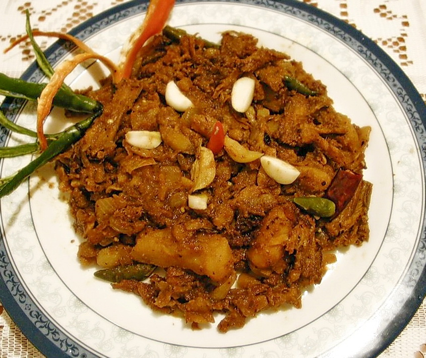
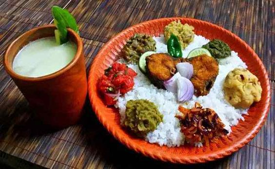

আমাদের শুঁটকি রেসিপি
শুঁটকির রেসিপি অনেক রকমের হয় । যে যেভাবেই পারে শুঁটকি দিয়ে বিভিন্ন রেসিপি তৈরি করতে পারে। বিশেষ করে
শুটকি-বেগুন বা শুঁটকি আর কাঁঠালের বিচির তরকারি স্বাদ অমৃত । আর ভর্তা, চচ্চড়ি তৈরি করতে তো শুঁটকির জুড়ি মেলা ভার ।
আপনার পছন্দের শুঁটকির খাবার অর্ডার করুন, শুঁটকি নিয়ে আমরা পৌঁছে যাবো আপনার দোরগোড়ায় !

লইট্টা শুঁটকি ভুনা
শুঁটকির জগতে লইট্টা শুঁটকি এক বিখ্যাত নাম । লইট্টা শুঁটকির ভুনা একবার দেখবেন তো আপনার জিভে পানি আসতে বাধ্য । স্বাদের কথা কী আর বলবো ! খাওয়ার সময় বুঝতে পারবেন কি অমৃত স্বাদ !

লইট্টা শুঁটকির ভর্তা
সাদা ভাতের সাথে সরিষার তেল দিয়ে ঝাল ঝাল করে বানানো লইট্টা শুঁটকির ভর্তা; আহা ! কী স্বাদ রে বাবা ! একবার খাবেন তো সারাজীবনে মনে থাকবে । ইয়াম্মি টেস্ট । কী ? খাবেন ? জিভে পানি আসছে ?

চ্যাপা শুঁটকির ভর্তা
চ্যাপা শুঁটকির ভর্তা ! আহা !! চ্যাপা শুঁটকির স্বাদ তো গিনেস বুকে ওঠার কথা ! চ্যাপা শুঁটকির ভর্তা যারা খেয়েছেন, তারা জানেন এটার স্বাদ কেমন ! যে বাঙালি চ্যাপা শুঁটকি খায়নি তার বাঙালিত্ব ষোলা আনাই ব্যর্থ !